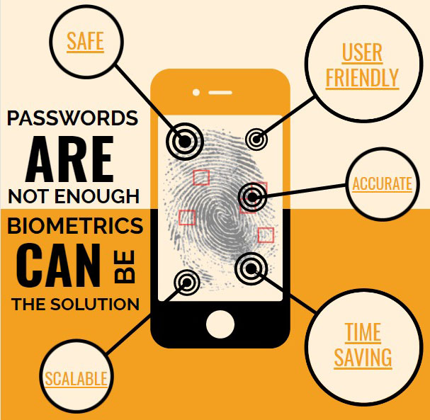

Biometrics are biological measurements — or physical characteristics — that can be used to identify individuals. For example, fingerprint mapping, facial recognition, and retina scans are all forms of biometric technology, but these are just the most recognized options.
The technology is mainly used for identification and access control or for identifying individuals who are under surveillance. The basic premise of biometric authentication is that every person can be accurately identified by intrinsic physical or behavioral traits.
Biometrics can be traced back to ancient times when fingerprints and handprints were used as signatures and seals. The use of biometrics as a tool for identification and security purposes began in the late 19th century with the work of Alphonse Bertillon.
While there are many types of biometrics for authentication, the five most common types of biometric identifiers are: fingerprints, facial, voice, iris, and palm or finger vein patterns.The types of biometrics can be grouped into two main categories: physiological biometrics and behavioral biometrics.
Physiological biometrics are characteristics or measurements of the human body, whereas behavioral biometrics refer to the unique way a person performs a certain behavior, like giving a signature. The categories can be further broken down as follows.
Biometrics are a powerful tool for identity proofing as they are more definitive identifiers than biographic identity data such as name, date of birth, and address, which rely on forgeable ID cards, draw upon error-prone records, and are simply not unique or permanent.
For large government agencies that employ thousands of people each year, onboarding and processing potential candidates’ biometric information for background checks can become a challenge due to the outdated Windows-based software applications that have traditionally been used for biometric enrollment.
The use of biometric security is growing rapidly worldwide. In some countries, biometric security systems are mainly used to secure highly sensitive facilities and systems. In other parts of the world, biometric security and surveillance is more widespread, with biometric technology routinely embedded in public security cameras.
Identifying patients based on biologically unique traits (face, fingerprint, iris, voice) ensures that care is provided to the right people, leading to a safer and more effective global healthcare environment. In a hospital or clinic, these tools offer safe, speedy benefits that include identification at check-in, access to applications and records, and ensuring a patient is treated by the right teams (and for the right reasons).
An Electronic Data Capture (EDC) system is a software solution that makes it easier for medical device companies to digitally collect, store, and manage the patient data collected during clinical investigations. Nowadays many EDC systems are distributed in the Software-as-a-Service (SaaS) business model and accessed by sites and sponsors over the Internet.
Today, the integration of EDC software with other types of software in the eClinical spectrum (randomization, supply management, adverse event reporting)
They are linked to a single individual (unlike a password, which can be used without authorisation).
They are very convenient since there is no need to remember or carry anything.
The security, they are highly fraud resistant.
False positives.
Scanner compatibility.
Expensive.
Malfunction.
Privacy issues
The future of biometrics is the future of security technology. Its authentication methods such as facial recognition and fingerprint recognition are becoming increasingly popular tools to secure digital transactions while providing customers with a frictionless user experience.
Presenter/Designer
Researcher
Researcher/Designer
Designer
Reseaecher/Technician